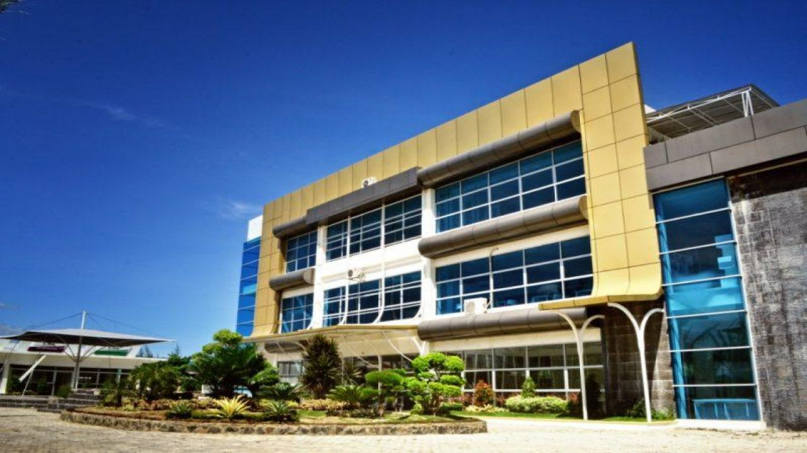

Selamat Datang di UUI

Universitas Ubudiyah Indonesia (UUI) adalah perguruan tinggi swasta
terkemuka di Banda Aceh. Dengan fasilitas modern dan dosen
berkualitas, UUI siap mencetak generasi pemimpin masa depan.
UUI didirikan pada tahun 2004 oleh Yayasan Ubudiyah Indonesia.
Awalnya, UUI hanya memiliki dua program studi, tetapi kini telah
berkembang menjadi universitas dengan 6 fakultas dan 1 program
pascasarjana.
Sejarah UUI
Selamat datang di kampus Universitas UBudiyah Indonesia (UUI),
universitas yang mendedikasikan diri untuk mencetak para ilmuan,
peneliti, profesional dan pemimpin Aceh masa depan. Di kampus yang
memiliki visi menjadi World Class University ini mahasiswa akan
difasiltiasi dengan berbagai kemudahan berbasis teknologi informasi
dan komunikasi (TIK) yang dikendalikan oleh Badan Perencana Sistem
Informasi (BAPSI) UUI. Kemudahan dari fasilitas ini antara lain
memungkin mahasiswa terkoneksi dengan sistem informasi akademik
(SIKAD) perkuliahan, seperti Kartu Rencana Studi (KRS) online,
informasi perkuliahan secara online dan menggunakan fasilitas wireless
fidelity (wifi) di lingkungan kampus. UUI menawarkan sejumlah program
studi favorit yang berada di bawah manajemen tiga fakultas, yaitu
Fakultas Ilmu Kesehatan (FIKES), Fakultas Sosial Sains dan Ilmu
Pendidikan (FS2IP) dan Fakultas Sains dan Teknologi (FST).
Program-program studi yang kami tawarkan selaras dengan trend dan
perkembangan dunia kerja saat ini, sehingga lulusan UUI nantinya
memiliki peluang kerja yang luas dan beragam sesuai dengan kompetensi
yang dimiliki.